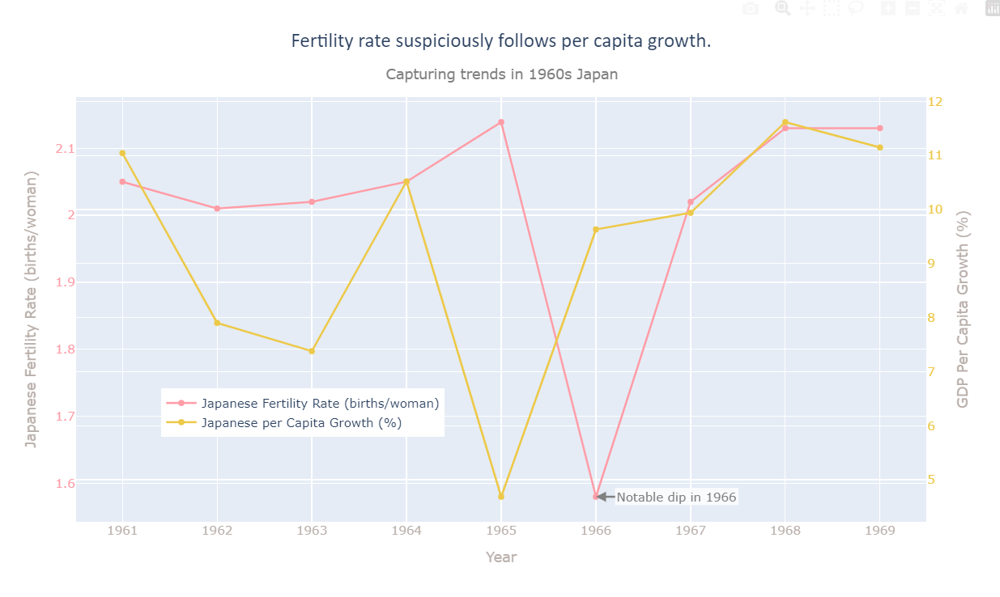
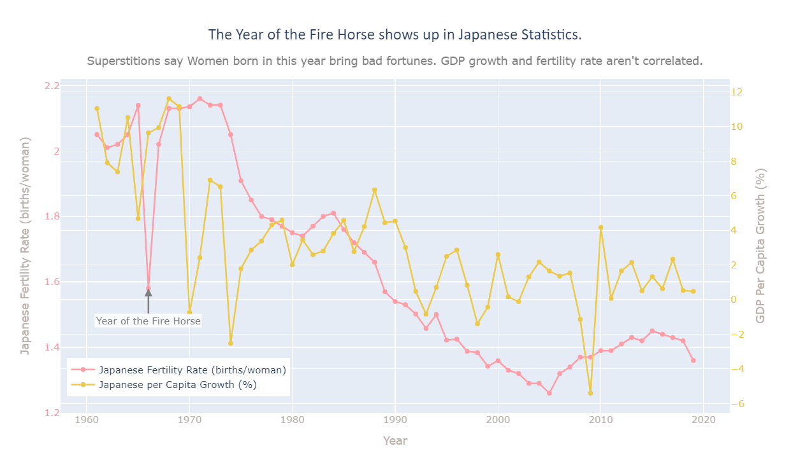

Proposition: Does GDP Growth determine birthrates?
FOR the Proposition

Design Decisions and Rationale:
- By placing different scales, the reader, assuming proximity, notices the pattern and similarity between the Japanese growth per capita rate and the Japanese fertility rate. The reader, assuming that pregnancy takes time, should assume that the fertility rate is the result of slowing economic growth. This decision is moderately deceptive, but it is often used to show similarity in trends. I would note that the reader would likely see this trend even if the graphs were in parallel. As a result, I would rate this as slightly deceptive with a score of -1. Moderately experienced readers would not dismiss it immeadiately because the trends are similar.
- The annotation marking the drop in birthrates is earnest, and it serves to point out the outlier in the data. The annotation itself isn't misleading itself, but rather due to the natural explanation provided in gdp growth declines. As such, it is an earnest decision, with a score of 1. This decision is the most persuasive, as it directs readers towards the noticable outlier in the data, rather than the overall trend. I thought about putting this outlier in the subtitle, but the slant in the subtitle, with the two y-axes, would lead to some readers noticing a higher degree of bias. As such, the annotation's placement is natural to point out the oddity with an arrow.
- The data transformation of filtering only the decade of the 1960s is not earnest. It helps readers notice a trend, but very experienced readers will notice that I have only included ten datapoints for each category. As such, this trend may be an outlier. This decision was the most natural in slicing the data to point out the oddity. This transformation is distinctly deceptive because it filters out trends contrary to the data. As such, this is very misleading with a score of -2. It is also the most natural way to see the data.
AGAINST the Proposition

Design Decisions and Rationale:
- I placed different scales, without filtering. This scale is much less biased than the previous misleading graph as it does not show a trend. This scale is less misleading, and serves to show that different scales don't point trends that don't exist as strongly. This is still slightly misleading, but does not obscure the true result. As a result, this rationale has the score -0.5.
- The annotation marking the year of the fire horse is honest, and adds desired information that wouldn't otherwise be found in the data. It addresses an outlier, and readers can acknowledge that a coincidence has taken place. This is an earnest marking as it addresses what may take the attention of the audience naturally. This is also noticable in the title and subtitle as this is what takes the audience's attention. As a direct result, the annotation markings are earnest, thus giving the score 2. This is extremely earnest as audience's may grasp to the natural drop of gdp growth (see the above visualization) and provides a redress to a concern.
- The legend adds more detail to the plot. The colors chosen were from Tableau's pallate. The legend being so close to the lines happens to reduce the amount of energy spent comparing the lines. Initially, the colors were green and red from the same pallate, which was changed to accomodate red-green color blindness. This was a reasonable design choice, with a score of 0.5 to distinguish the different lines.
Final Reflection
The creation of both graphs was challenging, especially with the goals of design engineering and initial data analysis. With so much data and columns, I had to sort and find trends and patterns that often were only found through 2 or more of comparison, filtering, and data transformation. I merged the datasets together to find these trends, along with the datasets.
The most surprising part of this process was finding out that the outlier I had been looking at was unrelated to the gdp growth that had happened in the 1960s. I initially worked off the assumption that the trend was real and correlated, but noticed that it wasn't present in the rest of the data. After closer inspection and research, I realized that my own plot, which I assumed presented the trend well, was misleading to me due to this superstition.
I would describe ethical analyis and visualization as the conscientious and informed transformation and visualization of data. For example, if the data present is of poor quality or presents an unfair representation of people, we have to consider the negative consequences that may occur to different groups if that da ta is presented, as well as the negative effects if that data is not presented. Ethical analysis has to be conducted through informed research just as much as data exploration and analysis, as we find mostly correlation and not causation. Acceptable persuasive choices are bounded by what the data scientist bets on their reputation. The presentation of data is not only based on the data, but the data scientist that creates, transforms, and visualizes it. Unfair presentation of data is bounded by ethical analysis as described above, but also the moral obligation to create better communities. Misleading persuasive choices are distinguished by mostly intent to confuse the audience, with the distinction of being indirect or not straightforward as their premise.